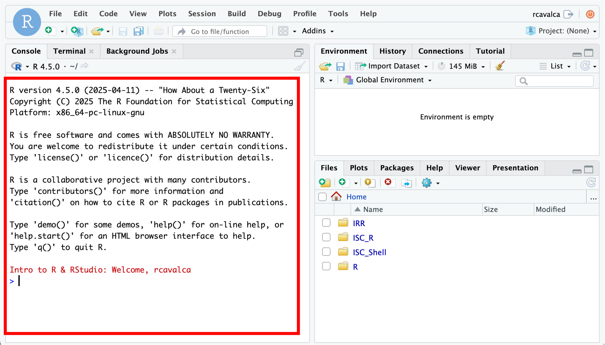
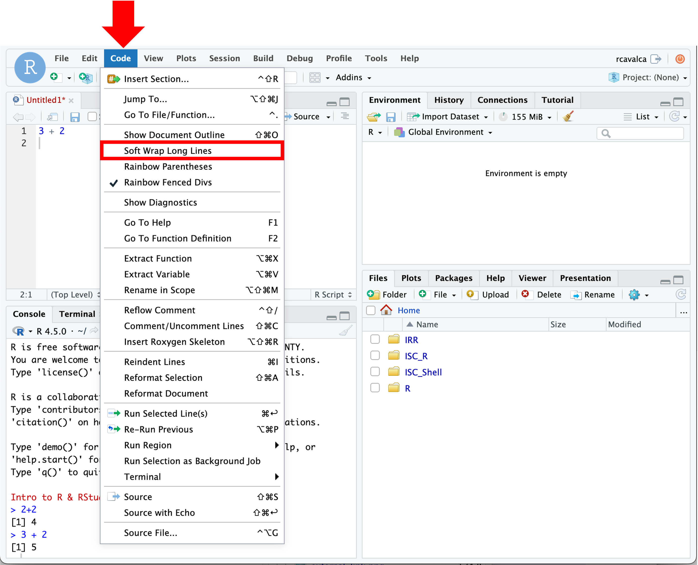

Introducing R and RStudio
Objectives
- Introduce R and RStudio.
- Learn how to read in a csv file.
- Discuss object naming conventions and types.
- Discuss functions and parameters.
- Learn how to get help with functions.
- Get comfortable with errors and asking for help.
Introduction to R and RStudio
In these lessons we’ll use the gapminder dataset to explore the relationship between a country’s life expectancy and the total value of its finished goods and services, also known as the Gross Domestic Product (GDP). To explore this relationship we need data and a platform to analyze the data.
We could explore the data with a spreadsheet program like Excel or Google Sheets, but it would be cumbersome to record the steps used to explore and make changes to the original data. Instead, we’ll use a programming language to explore and summarize the data. In particular we’ll use R and RStudio to create tabular summaries of the data as well as plots.
We’ll use R because it is:
- Open source, meaning it’s free!
- Widely used, meaning it has a large community of support to get help.
- Powerful, meaning it has many packages that extend and customize its abilities.
We’ll also use R because this is a precursor workshop to RNA-seq Demystified, which will teach you how to use R for differential expression analysis.
To get started, we’ll use RStudio, an integrated development environment (IDE). It acts as a graphical interface to R that has many helpful features, as we’ll see. Note that R and RStudio are different, but complimentary. You need R to use RStudio.
Log in to RStudio Server
To get started, we’ll go to http://bfx-workshop02.med.umich.edu
The login page for the server looks like:

Enter your user credentials and click Sign In. The RStudio interface should load and look like:

Checkpoint
Orienting on RStudio
RStudio is an integrated development environment where you can write, execute, and see the results of your code. The interface is arranged in different panes:
- The Console pane along the left where you can enter commands and execute them.
- The Environment pane in the upper right shows any variables you have created, along with their values.
- The pane in the lower right has a few functions:
- The Files tab let’s you navigate the file system.
- The Plots tab displays any plots from code run in the Console.
- The Help tab displays the documentation of functions.
Commands in the Console
We can input commands directly into the Console and press Enter to execute them. Try it with:
> 2+2
[1] 4If we enter commands directly into the Console and execute them, there is no record that persists after we close RStudio.

Checkpoint
Commands in the Script
To keep that record, we will enter our commands in a script. When first opening RStudio, there is no pane to write code to save as a file. But by clicking on the icon in the upper-right-most of the interface (a blank piece of paper with a + sign), and selecting R Script a new pane opens. This last pane is the Source (or Script) pane, and it is here that we’ll keep a running record of the commands we learn in this workshop.

Which will swing open the Script pane:

In the Script pane, enter:
3+2Notice that if we press Enter in the Source pane, we get a new line. The code does note execute. In order to execute the code we press Ctrl + Enter on the line of code we want to execute. We then see that code executed, along with its result in in the Console pane.

Note: Script Pane and Console Pane
The code written in the Script Pane is just text until it is executed with Control + Enter. The Console Pane is the record of the code that has been executed.
Configuring RStudio
All of the panes in RStudio have configuration options. For example, you can minimize/maximize a pane or resize panes by dragging the borders. The most important customization options for pane layout are in the View menu. Other options such as font sizes, colors/themes, and more are in the Tools menu under Global Options.
We can enable soft-wrapping of code by selecting Code and then Soft Wrap Long Lines.

Workshop Flow
The code we execute together is available in three forms:
- By viewing the instructor’s Zoom screen share,
- By code pasted into Slack, and
- By code blocks on these web pages.
As a learner you are welcome to get the same code into your Script Pane by:
- Typing the code from the Zoom screen share into your Script Pane,
- Copying the code from Slack and pasting into your Script Pane, or
- Copying the code from the code blocks on these web pages and pasting into your Script Pane.
Questions?
Creating an RStudio project
We’ll now begin our examination of the gapminder dataset by creating an RStudio Project. An RStudio project allows you to more easily:
- Save data, files, variables, packages, etc. related to a specific analysis project
- Restart work where you left off
- Collaborate, especially if you are using version control such as git.
- To create a project, go to the File menu, and click
New Project…. If you are prompted to save your
~/.Rhistory, select No. The following window should appear:

In this window, select Existing Directory. For “Project working directory”, click Browse…, select the “CF_R” folder, and click Choose. This will use the
/home/workshop/user/CF_Rfolder as the project directory.Finally click Create Project. In the “Files” tab of your output pane (more about the RStudio layout in a moment), you should see an RStudio project file, CF_R.Rproj. All RStudio projects end with the “.Rproj” file extension.
Checkpoint
Creating a script
Let’s create an R script in this project to record the commands we’ll learn:
- Click the File menu and select New File and then R Script.
- Before we go any further, save your script by clicking the save/disk icon that is in the bar above the first line in the script editor, or click the File menu and select Save.
- In the “Save File” window that opens, select New Folder. Name it “scripts”.
- Finally, name your file “r_basics” in the “File name” field.
The new script r_basics.R is now in the
scripts folder. You can see that by clicking the
scripts folder in the “Files” pane. And you can go back up
to the main project folder by clicking the .. to the right
of the up arrow in the “Files” pane. By convention, R scripts end with
the file extension .R.
Checkpoint
Loading Libraries
R has a number of functions that are present in the “base”
installation, but the power of R is that many libraries have been
written with myriad functionality. These libraries can be loaded with
the library() command. We’ll discuss how to download new
libraries later, but for now, let’s load the “tidyverse” package.
library(tidyverse)Note: Package loading messages
When loading a package you may get lots of feedback. These aren’t necessarily errors, but just give more information on the state of the environment after loading the package. The
tidyverseis actually a collection of packages. The first section of the output states which packages were lodaed and their versions. The second section notes “Conflicts” that occur because the name of a function is used multiple times. Sodplyr::filter() masks stats::filter()means that thedplyrlibrary and thestatslibrary have functions calledfilter(), and that when callingfilter(), thedplyrversion will be the default.
Checkpoint
Loading a csv file
Let’s jump right in and load some of the gapminder data using the
read_csv() function:
gapminder_1997 = read_csv('data/gapminder_1997.csv')Rows: 142 Columns: 6
── Column specification ────────────────────────────────────────────────────────────────────────────────────────────────────────────────────────────────────────────────────────────────────────────────────────────────────────
Delimiter: ","
chr (2): country, continent
dbl (4): year, pop, lifeExp, gdpPercap
ℹ Use `spec()` to retrieve the full column specification for this data.
ℹ Specify the column types or set `show_col_types = FALSE` to quiet this message.Remember, with the cursor on this line we can click Run,
or we can type Ctrl+Enter. We should see some
output in the Console pane as well as gapminder_1997 in the
Environment pane. We’ll explore the resulting data in later lessons.
Checkpoint
Let’s breakdown this command:
- We start with
gapminder_1997, this is the name of the object that will reference the data. - The
=indicates the assignment operator. R also has the assignment operator<-but we’ll stick with=in this workshop. The details about the distinction aren’t relevant to our workshops. - The command ends with
read_csv('data/gapminder_1997.csv')which is a call to the functionread_csv()with an argument stating the path of the file to read.
The output of read_csv() in the Console pane gives us
useful information such as the dimensions of the data, the delimiter of
the file, and how the columns of the data were interpreted.
Basic R data types
We notice in the output of read_csv() that the
country and continent columns were intepreted
as character strings (chr) and the year,
pop, lifeExp, and gdpPercap
columns were interpreted as numbers (dbl).
| Mode (abbreviation) | Type of data |
|---|---|
| Numeric (num) | Numbers such as floating point/decimals (1.0, 0.5, 3.14), there are also more specific numeric types (dbl - Double, int - Integer). These differences are not relevant for most beginners and pertain to how these values are stored in memory. |
| Character (chr) | A sequence of letters/numbers in single ’ ’ or double ” ” quotes. |
| Factor (fct) | A categorical variable with defined “levels” or categories. |
| Logical | Boolean values - TRUE or FALSE. |
Assigning values to objects
Let’s assign values to some objects and observe each object after assignment.
name = 'Ben'
name[1] "Ben"age = 26
age[1] 26name = 'Harry Potter'
name[1] "Harry Potter"Notice that with each assignment, the object appears in the
Environment pane. Also notice that by assigning name twice,
the value becomes the last assigned value, overwriting our initial
assignment. Also notice that if we evaluate the name of an object, it is
printed in the Console pane.
Let’s try to assign some more objects and see how things can go wrong:
1number = 3Error: <text>:1:2: unexpected symbol
1: 1number
^Flower = 'marigold'
flower = 'rose'favorite number = 12Error: <text>:1:10: unexpected symbol
1: favorite number
^Checkpoint
What happened here? We got “unexpected symbol” errors, which is R’s obtuse way of saying it didn’t like the name of the object.
1numberis problematic because object names can’t start with numbers.favorite numberis problematic because object names can’t contain spaces.Flowerandflowerare distinct objects because R is case-sensitive. Avoid variable names that differ by case.
Guidelines on naming objects
- Object names should be explicit and brief.
- Object names cannot start with numbers or contain spaces.
- Object names are case-sensitive.
- Either separate words in object names like
object_nameorobjectName. Be consistent.- Some names cannot be used because they are the names of fundamental functions (e.g. if, else, for; see here for complete list).
Calling functions
Earlier we ran the code
gapminder_1997 = read_csv('data/gapminder_1997.csv'). As we
said before, read_csv() is a function and
'data/gapminder_1997.csv' is an argument to that function.
What happens if we just do:
read_csv()Error in read_csv(): argument "file" is missing, with no defaultWe get an error in the Console pane. The key part of the message is “argument ‘file’ is missing, with no default”. In other words, this function needs to be told what to read because there is no default.
Not every function needs arguments, but many do. Try the following functions:
Sys.Date()[1] "2025-03-28"getwd()[1] "/home/workshop/rcavalca/workshop-intro-r-rstudio/source"round(3.1415, 2)[1] 3.14Notice that we threw in round() which actually takes two
arguments. How could we have known that?
Getting help with functions
When a function is unfamiliar, we’ll often look at the manual page
for the function to understand what arguments are required, what it
does, and what it outputs. By prepending a ? in front of a
function name, you can access the manual page.
?roundThe help page for round() tells us the function does
essentially what we’d expect, and gives some other related functions.
Note also that the arguments section gives us the names of the arguments
and what is expected of them. There is often a Details section to
describe nuances, and a Value section to describe the output. Finally,
there is an Examples section which gives examples of how to run the
code.
Arguments
When we called round(3.1415, 2) it seemed like the first
argument is the thing we want to round, and the second argument is how
many digits we want. That tracks when we look at ?round. R
can evaluate arguments of a function based on their
position, as we just saw. However, the preferred way to
call a function is to use the names of the arguments, as in:
round(x = 3.14159, digits = 2)[1] 3.14Calling a function, and using named arguments, increases the readability of the code and reduces the chance of error, especially with complex functions having many arguments.
Searching for functions
Prepending a ? in front a function name to find out more
about the function requires knowing the name of the function beforehand.
That won’t always be the case so there are a couple ways to search for R
functions.
- Search the internet for “R function that does X”.
- Use
help.search(), as inhelp.search('Chi-squared test')
Note that in the results of help.search() we see things
like, stats::chisq.test. Here the :: is R
notation for package_name::function.
Checkpoint
Errosr happn
We already ran some code in this lesson that produced errors. We’re going to run lots of code in this workshop and the next, and it’s likely we’ll see more errors! The key steps to correcting an error are:
- Read the error message to try to understand what might have gone wrong. Note, not all error messages are clear, so don’t worry if the error message doesn’t help you.
- Immediately check the spelling of the command; most errors are caused by typos.
- Check that the objects going into the function are what’s expected.
If you’re still stuck as to why an error occurred (something we all encounter), reach out for help. Make sure to post in Slack:
- The exact command that caused the error.
- The exact error message that resulted.
This way we’ll more quickly be able to diagnose the problem.
Base R and the tidyverse
If you’ve used R before, you may have learned commands that are
different what we’ll learn in this workshop. We’ll focus on functions
from the tidyverse, a collection of R packages designed to
work well together and and offer many features that aren’t part of a
fresh install of R (that is, “base R”). Generally the
tidyverse helps us write code that is easy to read and
maintain, as we’ll see.
The tidyverse is geared for data in the form of tables,
and it is very good at manipulating, summarizing, and
visualizing such data. However, data occurs in a variety of other shapes
and forms. In particular, in a bioinformatics context, the Bioconductor
repository of packages utilize data types that are not tables, and
therefore do not always work well with tidyverse functions.
We’ll see clearer examples of this in the RNA-seq Demystified workshop,
and you will undoubtedly encounter many examples in the future.
Some people ask “Should I learn tidyverse or base R?” and we think
that rather than either/or, it’s better to think of both/and. Knowing
base R and its approach will help in some contexts, while knowing
tidyverse will help in others.
Cheatsheets!
The tidyverse packages have excellent cheatsheets that
describe the functionality and usage of the packages. You can find them
in RStudio by going to the “Help” menu and selecting “Cheat Sheets”. The
two that will be most helpful in this workshop are “Data Visualization
with ggplot2” and “Data Transformation with dplyr”.
| Previous lesson | Top of this lesson | Next lesson |
|---|